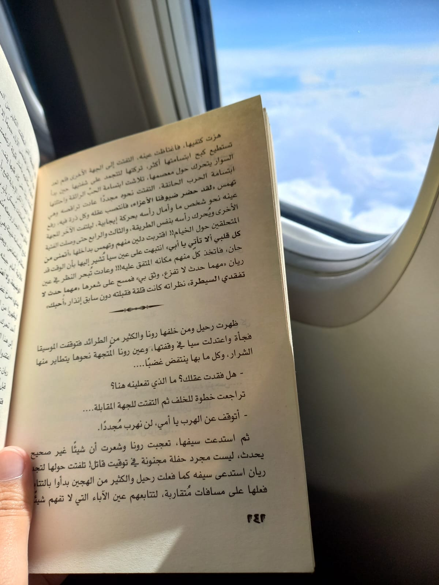
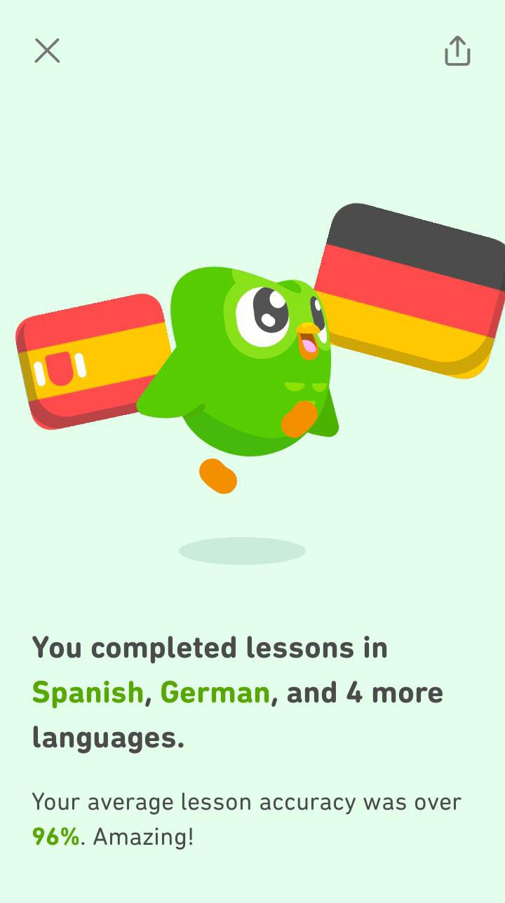

I am Egyptian from city Beni Suef And I am 19 years old
Egypt , Nile river
I have lived in my homeland for my first 9 years of my life and then moved with my family to Abha/ Saudi arabia and lived there for seven years before coming to Turkey for school
My hobbies
Plants
I have not grown up around farms or gardens but last year I found out about gardening and houseplants and I fell in growing stuff and just looking at a new leaf that I have grown myself makes me so happy
One of my favourite plant types ar succulents
Tasneem's favourite plants
Reading
Another thing I love doing in my free time is reading novels

Tasneem reading a book on the plane
Learning
Another Hobby of mine is learning new things especially new languages because and practicing them and learning about new cultures
I speak Arabic, English and Turkish and currently learning Spanish

My favourite animal
I'm a big animal lover and it's hard choosing one animal over the others but I find Giraffes to be some very interesting animals
My favourite fruit
It is also so hard but if I have to choose it will be mangoes they are simply amazing
A role model
Mohammad Aboutrika is a retired Egyptian footballer that's also an amazing human an a pride of Egypt
.jpeg)